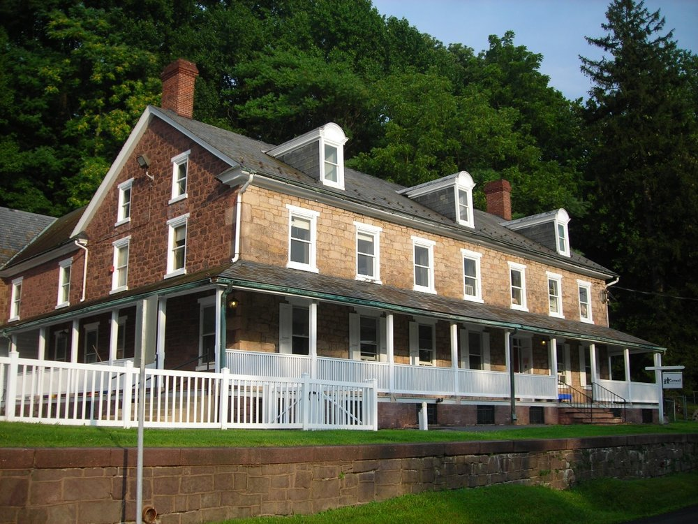
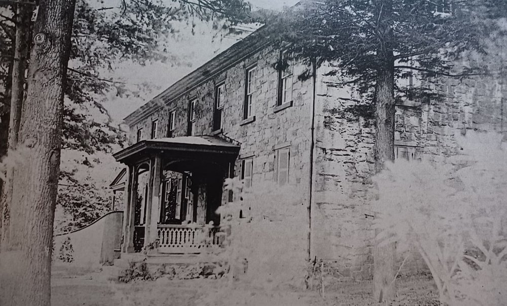
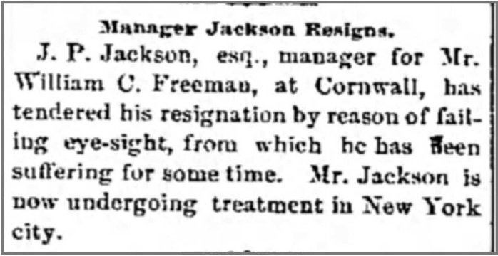
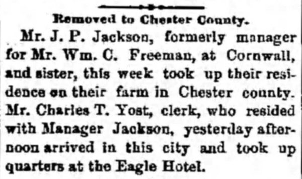
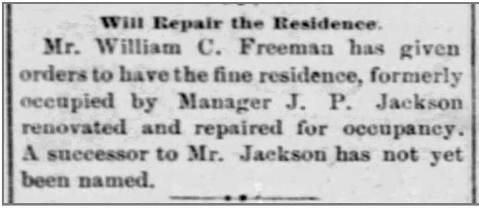
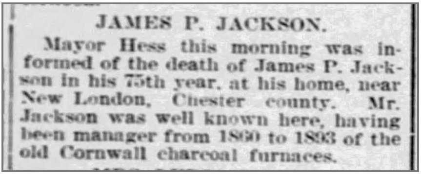
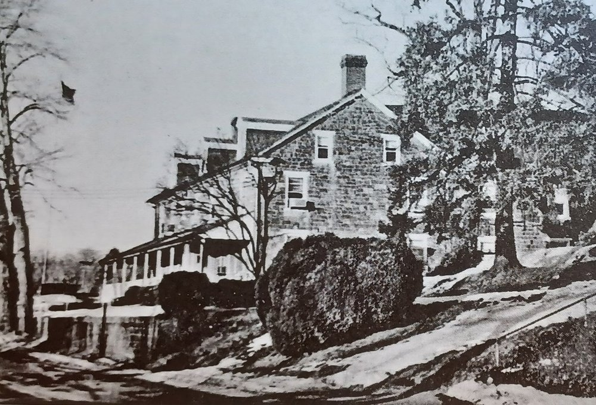

The historic Jackson House at 220 Boyd Street, Cornwall, Pennsylvania, is within a few years of its 200th anniversary.
The house is believed to date back to the 1830s, used as a tavern on the old road which had been completed in 1829. But parts of that story need closer examination — an examination which takes us on an interesting ride around Lebanon County.
The Turnpikes
In 1792 the Pennsylvania legislature approved the Downingtown turnpike, officially the "Philadelphia to Lancaster Turnpike," as part of efforts to improve roads and promote commerce. The midpoint of the 62-mile private toll road was Downingtown. The road later became "Lincoln Highway" and designated Route 30.
An extension, the Downingtown, Ephrata, and Harrisburg Turnpike, was chartered in 1803, forming what we know locally as Route 322. Over the years this route has extended diagonally southeast to northwest through Pennsylvania, connecting Cleveland, Ohio, to Atlantic City, New Jersey.
As this road passed westward through Lebanon County it acquired the name Horseshoe Pike. The road came up over South Mountain, passing right through Cornwall center on to Bismarck and points west. Several decades ago the road was improved, bypassing Cornwall by merging with Route 72 just south of Quentin, and is now referred to as 28th Division Highway.
Another road, the Cornwall Turnpike, joined with the Horseshoe Pike near Miners Village as a plank road to conduct commerce northward into Lebanon, up to the Union Canal, shipping tons of iron ore and pig iron.
With such roads it was common for taverns and roadhouses to spring up, and as believed, such was the house that later became known as "Jackson House" at 220 Boyd Street.
Transition
Several decades passed before the name Jackson became associated with this structure. According to the 1860s census, it seems to have transitioned to a boarding house; Artemas Wilhelm is listed as a resident, with his wife, two children, several household domestics, a hostler, a teamster, and two furnace clerks.
At the time Wilhelm was the manager of the Cornwall Iron Furnace. He had been lodging there since 1849, when he was first hired by R. W. Coleman to assist with the Anthracite Furnace. Later that decade, when Wilhelm had taken over as general manager of the R.W. Coleman Heirs estate, James Patterson Jackson was hired as manager of the Cornwall Iron Furnace (his obituary records the year as 1860).
James Patterson "J. P." Jackson (1828–1903)

The 1870s census shows Jackson living in the house with his sister Letitia, two furnace clerks, three domestics, and a laborer. The 1880 census reported similar occupancy.
He came from New London in Chester County, Pennsylvania, eldest son (b. 1828) of Hugh and Mary Jane Wilson Jackson, farmers. His sister Letitia, born 1837, joined him and over her life became known among Coleman women as an active supporter of their ladies' charities.
J. P. Jackson grew steadily as a trusted manager of Coleman affairs. By 1874 he is mentioned as the manager of the new Bird Coleman furnace that had just been constructed. In that decade he had also become a director of the Cornwall Turnpike Company and Wm. Freeman's Cornwall Railroad.
In the following decade he is described as a manager for R.W. Coleman heirs, and a manager of the Ore Bank Company. He also worked several farms. On one occasion he assisted Edward C. Freeman in the breeding of cattle. By 1890 he shows up in reports as supervising William C. Freeman's farm.
With the Cornwall Railroad passing near his house, Jackson had an occasional attachment to Penryn Park just to the east. In 1890 the park was undergoing upgrades; Jackson is described as supervising the improvements to the baseball field, leveling the field with gravel and building an impressive grandstand.


Early in 1892, J. P. Jackson resigned from his various duties due to failing eyesight. He underwent surgery and then retired to his own family farm back in New London, soon joined by his sister.

That same year a newspaper report says the residence was under renovation by W. C. Freeman. A few months later Jackson's household goods went up for public auction in Lebanon. From that time on, the house presumably was held by Freeman (who died in 1903) and eventually sold to Bethlehem Steel around 1920.

Jackson returned to the area periodically, remaining a director of the turnpike company and assisting D. S. Hammond in settling the estate of Sarah Coleman. Jackson died in 1903.
The "Jackson House" Since Then

As it is privately held by Cornwall Manor, little is known about the features of the interior of the house.
After Bethlehem Steel came to town and acquired the furnace properties and the ore banks c. 1920, the house became the office building for the company, eventually known as Bethlehem Steel Cornwall Division. An extension to the rear was added in the 1940s.
In the 1970s Bethlehem Steel was divesting its properties, and the house was purchased in 1978 by the Methodist Church Home, known now as Cornwall Manor, with the intention of providing apartments. Instead, it became Cornwall Children's Center, a day care operation for Cornwall Manor employees and local residents.
A New Future?
After the day care moved to the United Methodist Church of the Good Shepherd in 2014, the vacant building has been allowed to deteriorate for over a decade.
Hopefully new life and purpose can be breathed into this historic structure.
Pulling the string on this story only seems to complicate matters, begging questions which this author intends to untangle in the next installment.
A special mention to the excellent history at U.S. Route 322 in Pennsylvania on Wikipedia.
Thanks to the "Friends of the Cornwall Iron Furnace," whose assistance has been invaluable.
Originally published on LebTown, June 24, 2026.